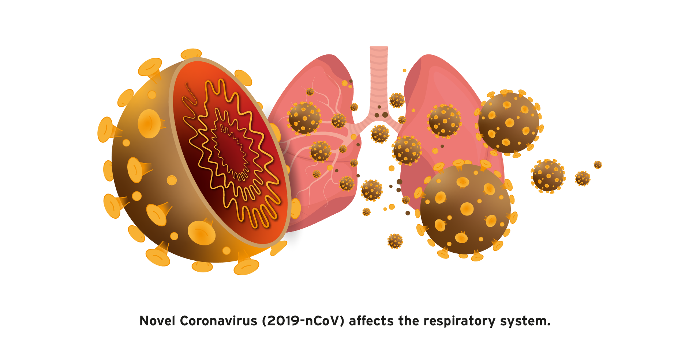

What is Covid-19?
A coronavirus is a kind of common virus that causes an infection in your nose, sinuses, or upper throat. Most coronaviruses aren't dangerous. COVID-19 is a disease that can cause what doctors call
a respiratory tract infection. It can affect your upper respiratory tract (sinuses, nose, and throat) or lower respiratory tract (windpipe and lungs). It's caused by a coronavirus named SARS-CoV-2.d that can trigger what doctors call
a respiratory tract infection. It can affect your upper respiratory tract (sinuses, nose, and throat) or lower respiratory tract (windpipe and lungs).

Coronavirus disease 2019 is an infectious disease caused by severe acute respiratory syndrome coronavirus 2. It was first identified in December 2019 in Wuhan, China, and has since spread globally,
resulting in an ongoing pandemic. As of 20 May 2020, more than 4.96 million cases have been reported across 188 countries and territories, resulting in more than 326,000 deaths. More than 1.88 million people have recovered. Common
symptoms include fever, cough, fatigue, shortness of breath, and loss of smell and taste. While the majority of cases result in mild symptoms, some progress to acute respiratory distress syndrome likely precipitated by cytokine storm,
multi-organ failure, septic shock, and blood clots. The time from exposure to onset of symptoms is typically around five days but may range from two to fourteen days. The virus is primarily spread between people during close contact,
most often via small droplets produced by coughing, sneezing, and talking
It spreads the same way other coronaviruses do, mainly through person-to-person contact. Infections range from
mild to deadly. SARS-CoV-2 is one of seven types of coronavirus, including the ones that cause severe diseases like Middle East respiratory syndrome (MERS) and sudden acute respiratory syndrome (SARS). The other coronaviruses cause
most of the colds that affect us during the year but aren’t a serious threat for otherwise healthy people.
Is there more than one strain of SARS-CoV-2?
It’s normal for a virus to change, or mutate, as it infects people. A Chinese study of 103 COVID-19 cases suggests the virus that causes it has done just that. They found two strains, which they named L and S.
The S type is older, but the L type was more common in early stages of the outbreak. They think one may cause more cases of the disease than the other, but they’re still working on what it all means.
How long will the coronavirus last?
It’s too soon to tell how long the pandemic will continue. It depends on many things, including researchers’ work to learn more about the virus, their search for a treatment and a vaccine, and the public’s efforts
to slow the spread. More than 100 vaccine candidates are in various stages of development and testing. This process usually takes years. Researchers are speeding it up as much as they can, but it still might take 12 to 18 months to
find a vaccine that works and is safe.
Symptoms of COVID-19
The main symptoms include: Fever Coughing Shortness of breath Trouble breathing Fatigue Chills, sometimes with shaking Body aches Headache Sore throat Loss of smell or taste Nausea Diarrhea The virus can lead
to pneumonia, respiratory failure, septic shock, and death. Many COVID-19 complications may be caused by a condition known as cytokine release syndrome or a cytokine storm. This is when an infection triggers your immune system to flood
your bloodstream with inflammatory proteins called cytokines. They can kill tissue and damage your organs. If you notice the following severe symptoms in yourself or a loved one, get medical help right away: Trouble breathing or shortness
of breath Ongoing chest pain or pressure New confusion Can’t wake up fully Bluish lips or face Strokes have also been reported in some people who have COVID-19. Remember FAST: Face. Is one side of the person’s face numb or drooping?
Is their smile lopsided? Arms. Is one arm weak or numb? If they try to raise both arms, does one arm sag? Speech. Can they speak clearly? Ask them to repeat a sentence. Time. Every minute counts when someone shows signs of a stroke.
Call 911 right away. If you’re infected, symptoms can show up in as few as 2 days or as many as 14. It varies from person to person. According to researchers in China, these were the most common symptoms among people who had COVID-19:
Fever 99% Fatigue 70% Cough 59% Lack of appetite 40% Body aches 35% Shortness of breath 31% Mucus/phlegm 27% Some people who are hospitalized for COVID-19 have also have dangerous blood clots, including in their legs, lungs, and arteries.